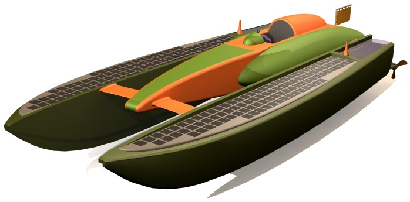
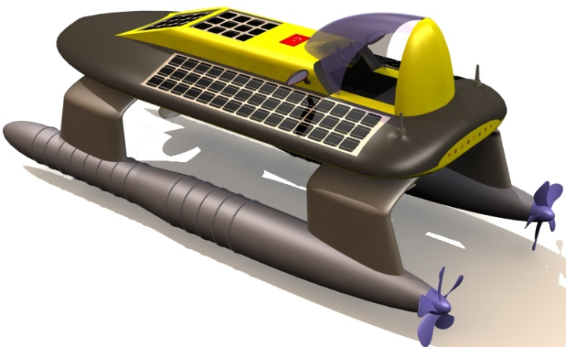
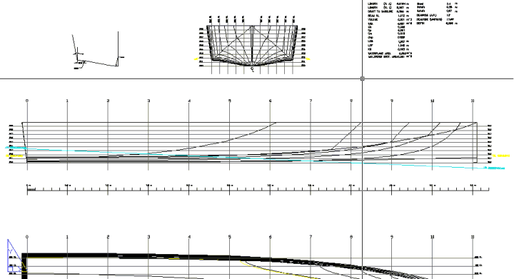
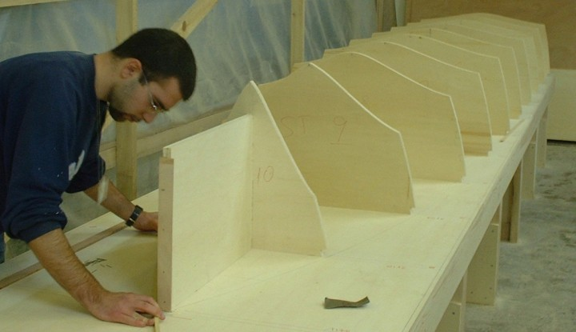
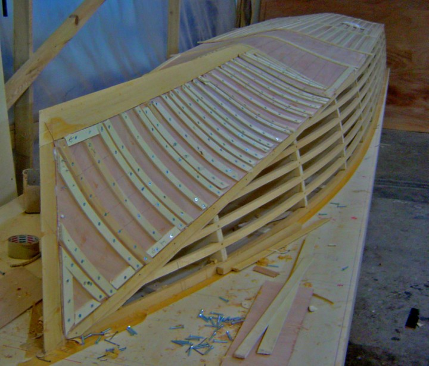
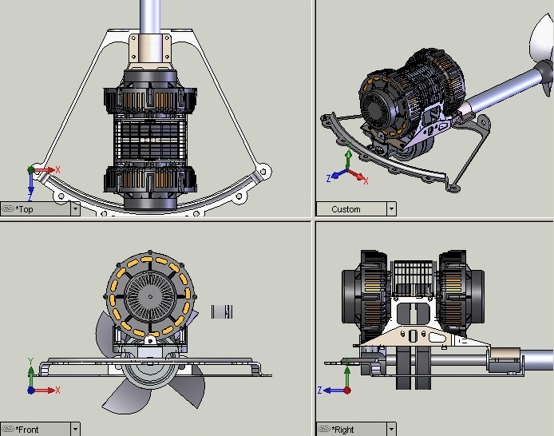
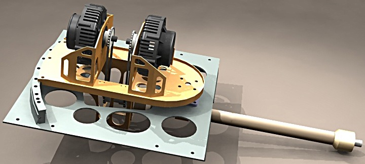
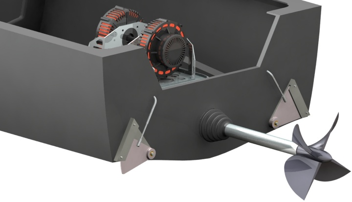

|
Bir güneþ teknesi nasýl çalýþýr?
The World Championship of Intercollegiate Solar Boating (Dünya Güneþ Enerjisiyle Çalýþan Tekneler Þampiyonasý)'na katýlmaya karar verdikten sonra yaptýðýmýz ilk iþ, yarýþma organizatorlerinden yarýþmanýn kurallarýný öðrenmemiz ve yapýlmýþ olan diðer teknelere ait raporlara ulaþmamýz oldu. Kýsa bir süre içinde sadece bu yarýþmanýn katýlýmcýlarý deðil dünyada yapýlmýþ olan, ulaþabildiðimiz tüm güneþ enerjisiyle çalýþan teknelerle ilgili bir veritabaný oluþturduk. Bu, girdiðimiz iþin zorluðunu anlamamýz ve bu iþi planlayabilmemizde bize çok yararlý oldu.
Güneþ enerjisiyle çalýþan tekneler üzerlerindeki güneþ panellerinin ürettiði elektrikle sahip olduklarý elektrik motorlarýný besleyen ve bu sayede hiç bir yakýt kullanmadan ve hiç bir atýk üretmeden hareket eden araçlardýr. Tabi iþ sadece güneþ panellerini motora baðlamak deðil. Bunu biraz açayým;
Güneþ panelleri ýþýðýn gücü ve açýsýna göre çok deðiþken voltaj ve akýmlar üretirler, bu elektriði regüle etmeden akülerinize veya motorunuza doðrudan veremezsiniz. Bu yüzden bazý devrelere sahip olmanýz gerekir. Bu devrelerinde de dünyada birkaç üreticisi vardýr ve genelde bu tarz araçlar yapmak isteyenler bu devreleri kullanýma hazýr þekilde satýnalýrlar. Bu regulasyon dýþýnda güneþ panellerinden en yüksek gücü çekmek için MPPT - Maximum Power Point Tracker (En Yüksek Gücü Takip Devresi) devresine ihtiyacýnýz vardýr. Bunun sonrasýnda elde ettiðiniz elektrikle akulerinizi þarj etmek için bir aku sarj devresine ve akulerdeki elektrikle motorunuzu istediginiz hýzlarda sürebilmek için de bir motor surucu devresine ihtiyaç duyarsýnýz.
Bunun disinda bu elektrik motorunun çalisma rejimlerine uyum saglayan bir dumen sistemine ve yapmak istediginiz hiza uygun da bir pervaneye ihtiyacýnýz vardýr.
Proje nasýl hayata geçirildi? Calýþmalara ne zaman baþlandý ve ne kadar sürede tamamlandý?
Güneþ enerjisiyle çalýþan bir teknenin nasýl yapýlmasý gerektiðini öðrendikten sonra okuldaki hocalarýmýza bir sunum yaptýk ve bu yarýþa katýlmakta kararlý olduðumuzu ancak bunu onlarýn desteði olmadan gerçekleþtiremeyeceðimizi söyledik. Onlarý da heyecanlandýrabildik sanýyorum..

Proje baþlangýcýnda deðerlendirilen alternatif tasarýmlar

Sonrasýnda ilk çaldýðýmýz kapý, Sahil Güvenlik botlarýmýzýn tasarýmcýlarý olan Yonca-Onuk Tersanesi idi. Yüksek performanslý deniz ve kara araçlarýnýn tasarým mühendisliðini yapmakta olan tersane yönetim kurulu baþkan yardýmcýsý Ekber Onuk ve o zamanki mühendislik müdürü Barýþ Gümüþlüoðlu, kendilerine yaptýðýmýz sunumdan sonra çok heyecanlandýlar ve bize destek olacaklarýný söylediler.
Tabi iþ, bu destek sözüyle bitmedi. Ýlk bir kaç ay bizi kendi mühendislik prensiplerine alýþtýrdýlar ve bize, hayal ettiðimiz tekneyi yapabilecek mühendisler ve tasarýmcýlar olabilmemiz için ödevler verdiler. Bu ödevleri tamamladýðýmýz anda da teknemizin imalatýna baþladýk. Sonradan farkýna vardýk ki bu ödevleri yaparken zaten teknemizin kaðýt üstünde veya bilgisayar ekranýnda yapýlabilecek tüm tasarýmýný yapmýþ, içinde kullanacaðýmýz ekipmanlarý en ince ayrýntýlarýna kadar çýkarmýþ, kendi tasarlayacaðýmýz ekipmanlarýn boyut ve aðýrlýklarýna karar vermiþtik. Yani teknemizle ilgili adeta bir kitap hazýrlamýþtýk.

Öncelikle tasarlamýþ olduðumuz tekne formunun bir erkek kalýbýný yaptýk. Sonrasýnda bu kalýbý kullanarak kendi tasarýmýmýz olan bir test düzeneði ile teknemizin direnç ve trim deneylerini yaptýk. Bu deneylerden aldýðýmýz veriler sayesinde güneþ panellerimizle besleyebileceðimiz en güçlü motoru kullanarak teknemizi en yüksek hangi hýzlara çýkarabileceðimizi gördük ve teknemizin sudaki hareketini izledik. Tasarladýðýmýz tekne formu bu testleri baþarýyla tamamlamýþtý.


Nusrat teknesinin teknik özellikleri nelerdir?
Solar Splash Yarýþmasý bu yýl 14.sü düzenlenmiþ olan bir yarýþma. Hem yarýþma ozganizatörlerinin gözlem ve tecrübeleri hem de yarýþma katýlýmcýlarýnýn geribeslemeleri sayesinde tüm kurallar güvenlik ve özgün tasarýmý ortaya çýkarak þekilde ortaya konmuþ. Örneðin teknenizin motorunu 36 volt'dan daha yüksek bir gerilimle sürmenize izin verilmiyor. Bu, 36 Volt üzeri gerilimlerle temasýn insan hayatýný riske atacaðý düþüncesiyle konulmuþ bir kural. Tekneniz için bir deadman switch tasarlamanýz gerekiyor. Bu, sürücü tekneden düþerse kontaðý otomatik olarak kapatan bir devre elemanýdýr ve yine güvenlikle ilgili bir kuraldýr. Kokpit tasarýmýnýzýn, sürücünün tekneyi 5 saniye içinde terketmesine müsade edecek þekilde yapýlmasý gerekiyor. Sürücümüz Ersin DEMÝR, bu konuyla ilgili yapýlan sýnavda Nusrat'ý 3 sn içinde terk edebildi. Bunlar dýþýnda teknede bir korna, karþýlaþýlan bir sorunu görsel olarak bildirmek için bir turuncu bayrak ve tabi en önemlisi ABD Sahil Güvenliði'nin onayladýðý bir yangýn söndürücü bulundurma zorunluluðu bulunuyor. Bunlar dýþýnda tasarýmý ön plana çýkaracak bazý kýsýtlar mevcut. Teknenizde kullandýðýnýz güneþ panelleri 480 Watt'ý geçemiyor ve aküleriniz kesinlikle arabalarda kullanýlan kurþun asit akülerden olmak zorunda. Yani lithium-iyon aküler kullanarak aðýrlýkla ilgili bir avantaj yakalama þansýnýz yok. Hem akü türü, hem akü aðýrlýðý hem de çýkýþ gücü kurallarla kýsýtlanmýþ durumda.
Bunlara ek olarak teknenin boyutunu etkileyen birçok kýsýt var, 6m'den daha uzun veya 2.4m'den daha geniþ bir tekne ile yarýþa katýlmanýz yasak. Teknenizin sephiyesine veya stabilitesine etki eden sualtýndaki hiç bir parçasýný dýþarý çýkarmak veya dönüþtürmek gibi bir þansýnýz bulunmuyor.
Tekneler yarýþmada üç ana parkurda yarýþýyorlar. Bunlardan ilki slalom parkuru, bu parkurda Solar Splash teknelerinin iyi ivmelenmelere, yuksek suratlere ve cok iyi manevra kabiliyetlerine sahip olmalarý gerekiyor. Bu etapta Nusrat, onun için tasarladýðýmýz Türkiye'de ilk defa tasarlanmýþ bir surface drive (yüzeyi yaran sevk sistemi), ona baðlý surface piercing pervane (yüzeyi yaran pervane) ve bizim icadýmýz olan, patent almayý düþündüðümüz, bir flap sistemi sayesinde slalom etabýný üçüncü olarak tamamladý ve ikinciliði 20 salise, birinciliði ise 1 saniye gibi küçük bir farkla kaçýrdý.



|